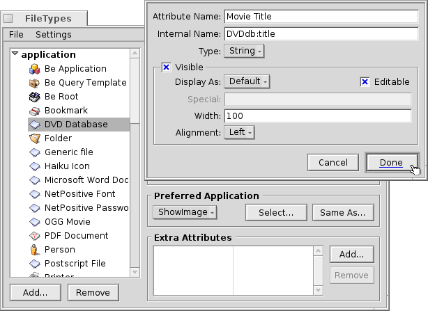

This is a workshop to show the use of Attributes, Queries, the Index and custom Filetypes. As an example, we build a database to keep track of our DVD library.
Preparations
Let's first decide what filetype and attributes would serve our needs. Originally, I wanted to use a Bookmark file with a link to the movie's IMdB page, but Haiku doesn't have a "bookmarkable" browser like BeOS' NetPositiv at the moment, so I came up with this: The file itself will be a JPEG image for the movie cover.
To that we add a couple of attributes. Here we have to decide if we want to query it later (then we have to add it to the index) and if so, what type of attribute it should be. Numbers (int, float) can be evaluated differently than text (/= vs. is/contains/starts with).
Here's are the attributes I'd like to see for my DVDs:
- Movie title
- Genre
- URL to e.g. IMdB
- Director/Cast
- Plot
- My rating from 1 to 10
- Coordinates in my shelf, e.g. A2, B3, so I find the DVD also in Real Life :)
- If so, who's borrowed the disk...
Creating a custom filetype
Start the Filetypes preferences, and click on the Add... button below the hierarchical list on the left. A small dialog opens and you specify in which MIME Group your new filetype will reside. You can also create a completely new group. Let's put it into "applications" and set the "Internal Name" to DVDdb.

Now, a panel for your new DVDdb filetype opens:

Icon
Double-click the icon well to open Icon-O-Matic to design an icon for your filetype. You can also drag&drop an icon from the icon well of another type, maybe as starting point for a modified version.
File Recognition
You can add suffixes like .txt, .jpg, .mp3 to recognize files by their extention. Useful when working with files from systems without MIME typing. We don't need that for our example.
Description
- Type Name - Appears e.g. in the Attribute menu of Tracker windows and the "Kind" attribute of a file.
- Description - A bit more detailed description.
Preferred Application
This dropdown menu shows a list of all applications that can handle this particular filetype. From here you can choose which program should open this specific file when it's double-clicked.
Select... opens a file dialog where you choose the application to open with this filetype. Here, we set Showimage to display the DVD's cover. Same as... opens a file dialog where you choose any file that already has the preferred application set that you're looking for.
Extra Attributes
Here we enter all the custom attributes we decided on in our preparations. Clicking the Add... button opens a panel:

- Attribute Name - Appears e.g. as the column heading in Tracker windows.
- Internal Name - Is used for indexing and querying the attribute.
- Type - Defines the value the attribute can hold and therefore how it can be queried.
- String for normal text
- Boolean for binary data: 0 or 1
- Integer for integer numbers with different ranges:
- 8 bit: +- 255
- 16 bit: +- 65,535
- 32 bit: +- 4,294,967,295
- 64 bit: +- 18,446,744,073,709,551,615
- Float for floatingpoint numbers, single precision
- Double for floatingpoint numbers, double precision
- Time for time and date format
- Visible - This checkbox determines if the attribute is visible in a Tracker window at all. Since the Tracker will be the interface to our DVD database, we check it and define its appearance with:
- Display As - Leave on "Default". In the future more option will become available, e.g. a bar or stars for a rating etc.
- Editable - Determines if the attribute shall be editable in Tracker.
- Width - The default width of that attributes column in a Tracker window.
- Alignment - The attribute can be displayed left, center, or right aligned.
Now, insert all the info for our attributes:
| Internal Name | Attribute type | indexed? | Description |
|---|---|---|---|
| DVDdb:title | text | yes | Movie title |
| DVDdb:genre | text | yes | Genre |
| DVDdb:url | text | no | URL |
| DVDdb:cast | text | yes | Director/Cast |
| DVDdb:plot | text | no | Plot |
| DVDdb:rating | int-32 | yes | Rating 1 to 10 |
| DVDdb:coord | text | no | Shelf |
| DVDdb:lent | text | yes | Lent to |
Indexing
Before we start entering data in our little DVD database, we should add certain attributes to the Index. Only indexed attributes can use Haikus fast Queries. So, what will we be searching in the future? We probably won't ask "What's in the B4 coordinate in my shelf?" or "Does the IMdB URL or the plot of the movie contain the word 'pope-shenooda'?".
This leaves these attributes:
| Internal Name | Attribute type |
|---|---|
| DVDdb:title | text |
| DVDdb:genre | text |
| DVDdb:cast | text |
| DVDdb:rating | int-32 |
To index them, we open a Terminal and simply add one attribute after the other:
mkindex -t string DVDdb:title mkindex -t string DVDdb:genre mkindex -t string DVDdb:cast mkindex -t int DVDdb:rating
The -t option defines the type of attribute, which is "string" for all but the rating, which is an integer number.
Filling in the data
Now, everything's set and we can begin putting some data into our base.
Since our basic file is a cover image, we go to some online resource like IMdB, look for our first movie and save the cover or movie poster in a new folder where we want to keep our DVDdb files.
Opening that folder we see a typical Tracker window with one JPEG in it. Right-clicking it, we change its filetype to application/DVDdb with the Filetype Addon. There's more info on this in the Filetypes document.
Now, we activate all our DVDdb attributes from the Attributes menu of the Tracker window and rearrange the columns to our taste:

By clicking on a yet empty attribute (or pressing ALT+E) we enter editing mode and fill each attribute. With TAB and SHIFT+TAB you can navigate between attributes.
In our example, we usually start with a downloaded JPG cover and change its type to applications/DVDdb. There's another elegant way to produce a file to work with. Just copy an empty file of our filetype to /boot/home/config/settings/Tracker/Tracker New Templates and rename it to DVDdb.
Right-clicking into a Tracker window, you'll find a new entry under New... besides the default "New folder".
Querying the database
Several hours of grunt work later, we have a nice little database that you can query to find all your Christina Ricci movies that have a 7+ rating... :)
You can assign a sensible attribute layout for query results of a specific filetype.
Open the folder containing your DVDdb files and arrange the attributes how you'd like to have query results presented. Copy this layout with Attributes | Copy Attributes.
Open /boot/home/config/settings/Tracker/DefaultQueryTemplates, create a new folder and rename it to group/filetype, replacing slashes with underscores; in our case "applications_DVDdb".
Open the new folder and paste in the layout with Attributes | Paste Attributes. Voilà: